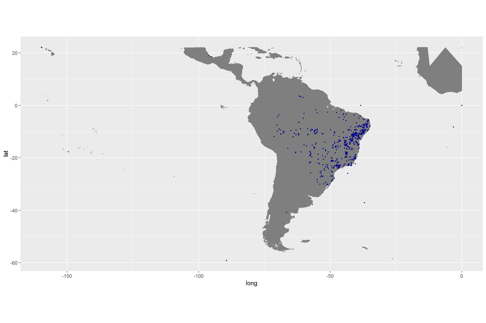
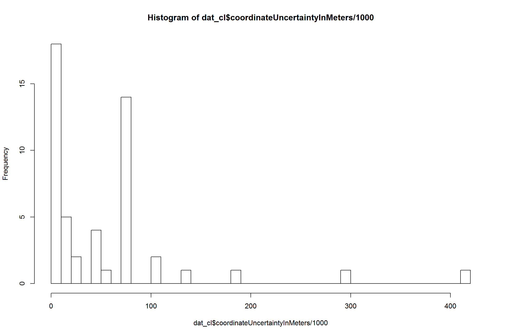
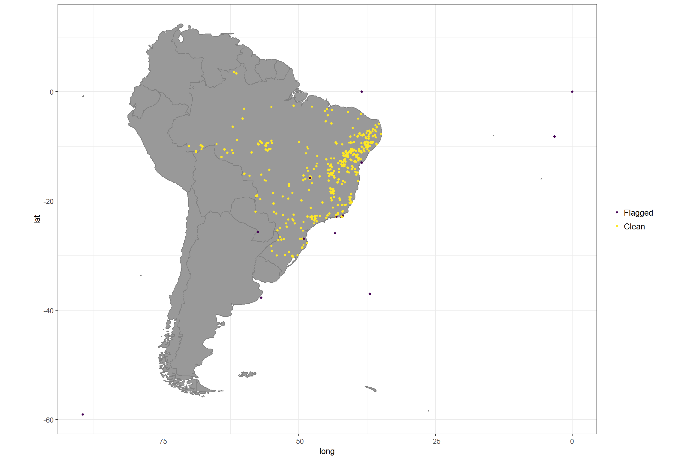
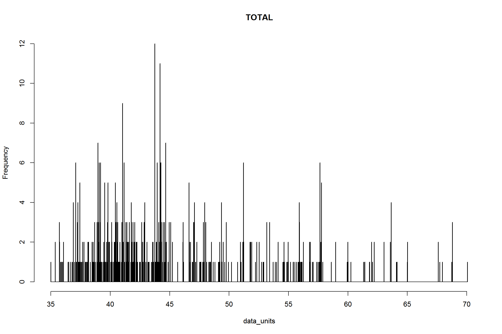
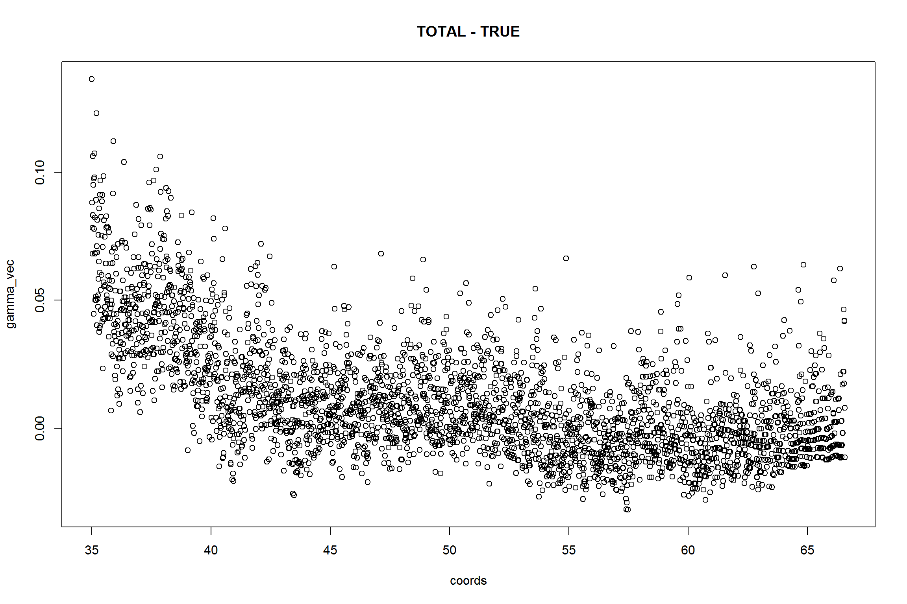
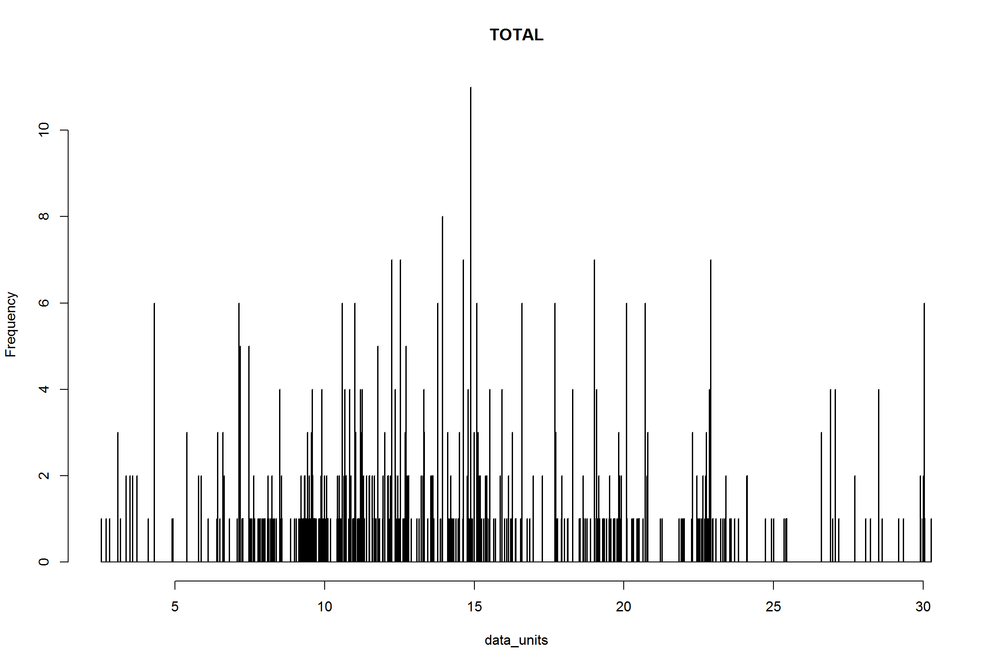
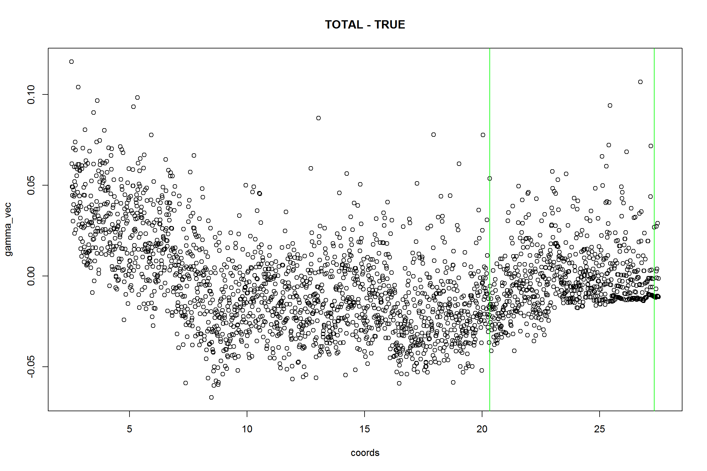
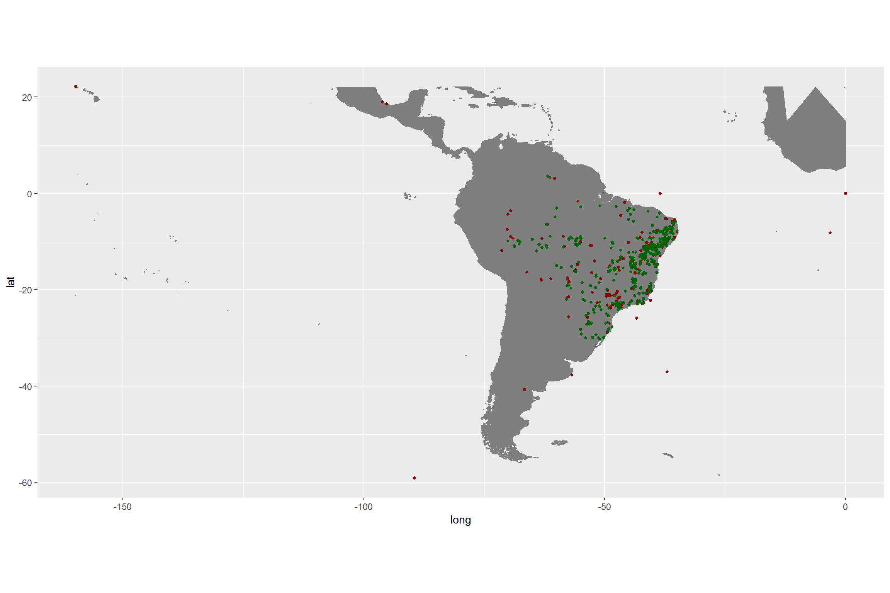
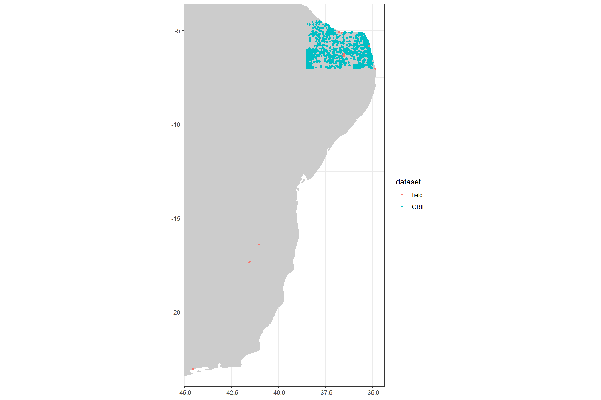

You will need the following R libraries for this exercise, just copy the code chunk into you R console to load them. You might need to install some of them separately.
library(tidyverse)
library(rgbif)
library(sp)
library(countrycode)
library(CoordinateCleaner)The following suggestion for data cleaning and are not comprehensive or a one-size-fits it all solution. You might want to change, omit, or add steps depending on your research question and scale. Remember: What is ‘good data’ depends completely on the type of downstream analyses and their spatial scale. The cleaning here might be a good starting point for continental scale biogeographic analyses.
GBIF provides a large amount of information for each record, leading to a huge data.frame with many columns. However some of this information is only available for few records, and thus for most analyses most of the columns can be dropped. Here, we will only retain information to identify the record and information that is important for cleaning up the data.
dat <- read_csv("inst/gbif_occurrences.csv", guess_max = 25000)%>%
mutate(dataset = "GBIF")
names(dat) #a lot of columns
dat <- dat %>%
select(species, decimalLongitude, decimalLatitude, countryCode, individualCount,
gbifID, family, taxonRank, coordinateUncertaintyInMeters, year,
basisOfRecord, institutionCode, datasetName, dataset)%>% # you might find other ones useful depending on your downstream analyses
mutate(countryCode = countrycode(dat$countryCode, origin = 'iso2c', destination = 'iso3c'))
## [1] "name"
## [2] "key"
## [3] "decimalLatitude"
## [4] "decimalLongitude"
## [5] "issues"
## [6] "datasetKey"
## [7] "publishingOrgKey"
## [8] "networkKeys"
## [9] "installationKey"
## [10] "publishingCountry"
## [11] "protocol"
## [12] "lastCrawled"
## [13] "lastParsed"
## [14] "crawlId"
## [15] "extensions"
## [16] "basisOfRecord"
## [17] "taxonKey"
## [18] "kingdomKey"
## [19] "phylumKey"
## [20] "classKey"
## [21] "orderKey"
## [22] "familyKey"
## [23] "genusKey"
## [24] "speciesKey"
## [25] "scientificName"
## [26] "kingdom"
## [27] "phylum"
## [28] "order"
## [29] "family"
## [30] "genus"
## [31] "species"
## [32] "genericName"
## [33] "specificEpithet"
## [34] "taxonRank"
## [35] "dateIdentified"
## [36] "elevation"
## [37] "elevationAccuracy"
## [38] "continent"
## [39] "stateProvince"
## [40] "year"
## [41] "month"
## [42] "day"
## [43] "eventDate"
## [44] "lastInterpreted"
## [45] "license"
## [46] "identifiers"
## [47] "facts"
## [48] "relations"
## [49] "geodeticDatum"
## [50] "class"
## [51] "countryCode"
## [52] "country"
## [53] "rightsHolder"
## [54] "identifier"
## [55] "recordNumber"
## [56] "datasetName"
## [57] "municipality"
## [58] "locality"
## [59] "gbifID"
## [60] "language"
## [61] "collectionCode"
## [62] "occurrenceID"
## [63] "type"
## [64] "catalogNumber"
## [65] "recordedBy"
## [66] "institutionCode"
## [67] "ownerInstitutionCode"
## [68] "occurrenceRemarks"
## [69] "identifiedBy"
## [70] "modified"
## [71] "http...unknown.org.http_..rs.tdwg.org.dwc.terms.Identification"
## [72] "otherCatalogNumbers"
## [73] "fieldNotes"
## [74] "http...unknown.org.http_..rs.gbif.org.terms.1.0.Multimedia"
## [75] "coordinateUncertaintyInMeters"
## [76] "references"
## [77] "verbatimEventDate"
## [78] "verbatimLocality"
## [79] "taxonID"
## [80] "http...unknown.org.occurrenceDetails"
## [81] "rights"
## [82] "eventTime"
## [83] "identificationID"
## [84] "individualCount"
## [85] "infraspecificEpithet"
## [86] "informationWithheld"
## [87] "habitat"
## [88] "institutionID"
## [89] "georeferenceProtocol"
## [90] "endDayOfYear"
## [91] "county"
## [92] "preparations"
## [93] "startDayOfYear"
## [94] "verbatimElevation"
## [95] "collectionID"
## [96] "identificationRemarks"
## [97] "identificationQualifier"
## [98] "typeStatus"
## [99] "georeferenceSources"
## [100] "nomenclaturalStatus"
## [101] "nomenclaturalCode"
## [102] "bibliographicCitation"
## [103] "higherGeography"
## [104] "http...unknown.org.http_..rs.tdwg.org.dwc.terms.ResourceRelationship"
## [105] "higherClassification"
## [106] "georeferencedDate"
## [107] "verbatimTaxonRank"
## [108] "georeferenceRemarks"
## [109] "fieldNumber"
## [110] "previousIdentifications"
## [111] "http...unknown.org.http_..rs.gbif.org.terms.1.0.Identifier"
## [112] "eventRemarks"
## [113] "establishmentMeans"
## [114] "organismRemarks"
## [115] "taxonRemarks"
## [116] "organismQuantity"
## [117] "eventID"
## [118] "higherGeographyID"
## [119] "organismQuantityType"
## [120] "parentEventID"
## [121] "depth"
## [122] "depthAccuracy"
## [123] "scientificNameID"
## [124] "dynamicProperties"
## [125] "acceptedNameUsage"
## [126] "verbatimCoordinateSystem"
## [127] "locationID"
## [128] "datasetID"
## [129] "accessRights"
## [130] "parentNameUsage"
## [131] "organismID"
## [132] "typifiedName"
## [133] "coordinatePrecision"
## [134] "earliestAgeOrLowestStage"
## [135] "associatedReferences"
## [136] "occurrenceStatus"
## [137] "taxonConceptID"
## [138] "georeferenceVerificationStatus"
## [139] "lithostratigraphicTerms"
## [140] "samplingProtocol"
## [141] "latestAgeOrHighestStage"
## [142] "bed"
## [143] "formation"
## [144] "dataset"# read the field data
field <- read_csv("field_data/NAtal_occurrences.csv")
field <- field %>% dplyr::select(species, decimalLongitude = long, decimalLatitude = lat,
countryCode = country) %>% mutate(dataset = "field") %>% mutate(year = 2018) %>%
mutate(countryCode = countrycode(countryCode, origin = "country.name", destination = "iso3c"))
dat <- bind_rows(dat, field)Visualizing the data on a map can be extremely helpful to understand potential problems and to identify problematic records.
world.inp <- map_data("world")
ggplot() + geom_map(data = world.inp, map = world.inp, aes(x = long, y = lat,
map_id = region), fill = "grey80") + xlim(min(dat$decimalLongitude, na.rm = T),
max(dat$decimalLongitude, na.rm = T)) + ylim(min(dat$decimalLatitude, na.rm = T),
max(dat$decimalLatitude, na.rm = T)) + geom_point(data = dat, aes(x = decimalLongitude,
y = decimalLatitude, color = dataset), size = 1) + coord_fixed() + theme_bw() +
theme(axis.title = element_blank())
As you cans see there are a some unexpected occurrence locations, outside the current distribution range. We will find out the reasons for this in a minute. In this specific case we could relatively easily get rid of a large number of problematic records based on prior knowledge (we are only interested in records in South America) but we usually do not have this kind of knowledge when dealing with larger datasets, so we will try to get rid of those records in different ways. GBIF data often contain a good number of meta-data that can help to locate problems. First we’ll remove data without coordinates, coordinates with very low precision and the unsuitable data sources. We will remove all records with a precision below 100km as this represent the grain size of many macro-ecological analyses, but the number is somewhat arbitrary and you best chose it based on your downstream analyses. We also exclude fossils as we are interested in recent distributions and records of unknown source, as we might deem them not reliable enough.
# remove records without coordinates
dat_cl <- dat %>% filter(!is.na(decimalLongitude)) %>% filter(!is.na(decimalLatitude))
# remove records with low coordinate precision
hist(dat_cl$coordinateUncertaintyInMeters/1000, breaks = 30)
dat_cl <- dat_cl %>% filter(coordinateUncertaintyInMeters/1000 <= 100 | is.na(coordinateUncertaintyInMeters))
# remove unsuitable data sources, especially fossils
table(dat$basisOfRecord)
dat_cl <- filter(dat_cl, basisOfRecord == "HUMAN_OBSERVATION" | basisOfRecord ==
"OBSERVATION" | basisOfRecord == "PRESERVED_SPECIMEN" | is.na(basisOfRecord))
##
## FOSSIL_SPECIMEN HUMAN_OBSERVATION LIVING_SPECIMEN
## 4 76 71
## PRESERVED_SPECIMEN UNKNOWN
## 24624 965In the next step we will remove records with suspicious individual counts. GBIF includes few records of absence (individual count = 0) and suspiciously high occurrence counts, which might indicate inappropriate data or data entry problems.
# Individual count
table(dat_cl$individualCount)
dat_cl <- dat_cl %>% filter(individualCount > 0 | is.na(individualCount)) %>%
filter(individualCount < 99 | is.na(individualCount)) # high counts are not a problem
##
## 0 1 2 3 4 5 6 7 8 13
## 7512 87 30 53 192 12 18 1 2 1We might also want to exclude very old records, as they are more likely to be unreliable. For instance, records from before the second world war are often very imprecise, especially if they were geo-referenced based on political entities. Additionally old records might be likely from areas where species went extinct (for example due to land-use change).
# Age of records
table(dat_cl$year)
dat_cl <- dat_cl %>% filter(year > 1945) # remove records from before second world war
##
## 1836 1900 1914 1918 1920 1927 1935 1936 1937 1938 1939 1940 1941 1942 1943
## 1 1442 1 1 1 1 14 12 3 2 15 21 19 77 15
## 1944 1945 1946 1947 1948 1949 1950 1951 1952 1953 1954 1955 1956 1957 1958
## 34 9 32 30 2 3 1 4 3 75 13 2 1 1 6
## 1959 1960 1961 1965 1966 1967 1968 1969 1970 1971 1972 1973 1974 1975 1976
## 9 1 2 2 2 4 30 4 3 8 39 6 13 34 2
## 1977 1978 1979 1980 1981 1982 1983 1984 1985 1986 1987 1988 1989 1990 1991
## 84 17 9 251 39 57 8 436 37 15 61 54 139 52 30
## 1992 1993 1994 1995 1996 1997 1998 1999 2000 2001 2002 2003 2004 2005 2006
## 215 15 68 31 331 226 52 190 216 382 799 421 246 362 826
## 2007 2008 2009 2010 2011 2012 2013 2014 2015 2016 2017 2018
## 692 415 570 871 1330 1549 800 1508 772 421 346 360On top of the geographic cleaning, we also want to make sure to only include species level records and records from the right taxon. Taxonomic problems such as spelling mistakes in the names or synonyms can be a severe problem. We’ll not treat taxonomic cleaning here, but check out the taxize R package or the taxonomic name resolution service for that.
table(dat_cl$family) #that looks good
table(dat_cl$taxonRank) # We will only include records identified to species level
dat_cl <- dat_cl %>% filter(taxonRank == "SPECIES" | is.na(taxonRank))
##
## Acanthaceae Aizoaceae Amaranthaceae Anacardiaceae
## 250 13 156 169
## Annonaceae Apiaceae Apocynaceae Apodanthaceae
## 96 3 419 1
## Aptandraceae Aquifoliaceae Araliaceae Aristolochiaceae
## 1 1 6 23
## Asclepiadaceae Asteraceae Bataceae Begoniaceae
## 2 625 1 4
## Bignoniaceae Bixaceae Boraginaceae Brassicaceae
## 287 40 7 1
## Burseraceae Cabombaceae Cactaceae Calophyllaceae
## 72 7 144 1
## Cannabaceae Capparaceae Caricaceae Caryophyllaceae
## 38 122 5 3
## Celastraceae Chrysobalanaceae Cleomaceae Clusiaceae
## 101 115 58 37
## Combretaceae Connaraceae Convolvulaceae Crassulaceae
## 160 7 463 3
## Cucurbitaceae Dilleniaceae Droseraceae Ebenaceae
## 59 71 15 17
## Ehretiaceae Elaeocarpaceae Erythropalaceae Erythroxylaceae
## 147 10 1 254
## Euphorbiaceae Fabaceae Gentianaceae Gesneriaceae
## 781 3401 49 4
## Goodeniaceae Haloragaceae Heliotropiaceae Hernandiaceae
## 1 1 155 7
## Humiriaceae Hydroleaceae Hydrophyllaceae Hypericaceae
## 15 16 1 47
## Krameriaceae Lacistemataceae Lamiaceae Lauraceae
## 59 1 203 78
## Lecythidaceae Lentibulariaceae Linderniaceae Loasaceae
## 37 85 7 21
## Loganiaceae Loranthaceae Lythraceae Malpighiaceae
## 36 107 102 321
## Malvaceae Marcgraviaceae Melastomataceae Meliaceae
## 620 22 250 29
## Menispermaceae Menyanthaceae Microteaceae Molluginaceae
## 28 10 21 20
## Moraceae Moringaceae Myristicaceae Myrtaceae
## 55 2 1 708
## Nyctaginaceae Nymphaeaceae Ochnaceae Olacaceae
## 116 33 253 3
## Oleaceae Onagraceae Opiliaceae Orobanchaceae
## 1 75 6 9
## Oxalidaceae Papaveraceae Passifloraceae Peraceae
## 79 3 142 57
## Phyllanthaceae Phytolaccaceae Picramniaceae Piperaceae
## 33 28 16 56
## Plantaginaceae Plumbaginaceae Podostemaceae Polygalaceae
## 140 29 2 193
## Polygonaceae Portulacaceae Primulaceae Proteaceae
## 120 55 31 5
## Ranunculaceae Rhamnaceae Rhizophoraceae Rubiaceae
## 3 85 2 1101
## Rutaceae Salicaceae Santalaceae Sapindaceae
## 52 64 75 291
## Sapotaceae Schoepfiaceae Scrophulariaceae Simaroubaceae
## 84 21 8 66
## Siparunaceae Solanaceae Talinaceae Trigoniaceae
## 4 229 19 21
## Turneraceae Urticaceae Verbenaceae Violaceae
## 116 19 215 23
## Vitaceae Vochysiaceae Ximeniaceae Zygophyllaceae
## 66 20 18 6
##
## FAMILY FORM GENUS SPECIES SUBSPECIES VARIETY
## 943 2 3051 11164 90 159We excluded almost round((nrow(dat) - nrow(dat_cl)) / nrow(dat) * 100, 0) of the initial data points based on metadata! Most of them due to incomplete identification.
clean_coordinates function is a wrapper around a large set of automated cleaning steps to flag errors that are common to biological collections, including: sea coordinates, zero coordinates, coordinate - country mismatches, coordinates assigned to country and province centroids, coordinates within city areas, outlier coordinates and coordinates assigned to biodiversity institutions. You can switch on each test individually using logical flags, modify the sensitivity of most individual tests using the “.rad” arguments, and provide custom gazetteers using the “.ref” arguments. See ?clean_coordinates for help. To use the country - coordinate mismatch test we need to convert the country from ISO2 to ISO3 format. Since we work in a coastal area, we use a buffered reference, to avoid flagging records close to the sea.# flag problems
dat_cl <- data.frame(dat_cl)
flags <- clean_coordinates(x = dat_cl, lon = "decimalLongitude", lat = "decimalLatitude",
countries = "countryCode", species = "species", tests = c("capitals", "centroids",
"equal", "gbif", "zeros", "countries", "seas"), seas_ref = buffland) # most test are on by defaultHere an additional sum(flags$.summary) records were flagged! A look at the test summary and plot reveal the major issues.
plot(flags, lon = "decimalLongitude", lat = "decimalLatitude")
After this inspection we can safely remove the flagged records for this tutorial
dat_cl <- dat_cl[flags$.summary, ]Some problems, in particular certain kinds of imprecisions, cannot be identified on the record level. For instance, many records are based on gridded sampling schemes or atlas projects, but are not easily identifiable as such. To identify these kind of problems CoordinateCleaner includes dataset level tests, which search for periodicity in the decimals of occurrence records, and can indicate, if a substantial portion of the coordinates in a dataset have been subject to rounding or are nodes of a raster scheme. You can run this test either on the entire dataset, or on individual contributing dataset, e.g. all records from GBIF, using the clean_dataset function. See here for more details.
# For the total dataset
dat_cl$datasettotal <- "TOTAL"
## Run dataset level test
clean_dataset(dat_cl, ds = "datasettotal", lon = "decimalLongitude", lat = "decimalLatitude")
## binomial.pvalue perc.difference pass.ddmm dataset lon.n.outliers
## TOTAL 0 0.2 TRUE TOTAL 5
## lon.n.regular.distance lon.regular.distance lon.flag lat.n.outliers
## TOTAL 1 0.05 TRUE 11
## lat.n.regular.distance lat.regular.distance lat.flag summary
## TOTAL 2 0.06 TRUE TRUEThere is no evidence for periodicity in the entire dataset or its three biggest contributing datasets. Great!
plot)world.inp <- map_data("world")
ggplot() + geom_map(data = world.inp, map = world.inp, aes(x = long, y = lat,
map_id = region), fill = "grey80") + xlim(min(dat$decimalLongitude, na.rm = T),
max(dat$decimalLongitude, na.rm = T)) + ylim(min(dat$decimalLatitude, na.rm = T),
max(dat$decimalLatitude, na.rm = T)) + geom_point(data = dat, aes(x = decimalLongitude,
y = decimalLatitude), colour = "darkred", size = 1) + geom_point(data = dat_cl,
aes(x = decimalLongitude, y = decimalLatitude), colour = "darkgreen", size = 1) +
coord_fixed() + theme_bw() + theme(axis.title = element_blank())
ggplot() + geom_map(data = world.inp, map = world.inp, aes(x = long, y = lat,
map_id = region), fill = "grey80") + xlim(min(dat$decimalLongitude, na.rm = T),
max(dat$decimalLongitude, na.rm = T)) + ylim(min(dat$decimalLatitude, na.rm = T),
max(dat$decimalLatitude, na.rm = T)) + geom_point(data = dat_cl, aes(x = decimalLongitude,
y = decimalLatitude, colour = dataset), size = 1) + coord_fixed() + theme_bw() +
theme(axis.title = element_blank())
write_csv(dat_cl, "inst/occurrence_records_clean.csv")